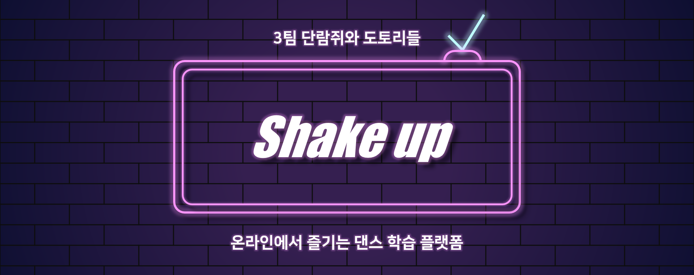
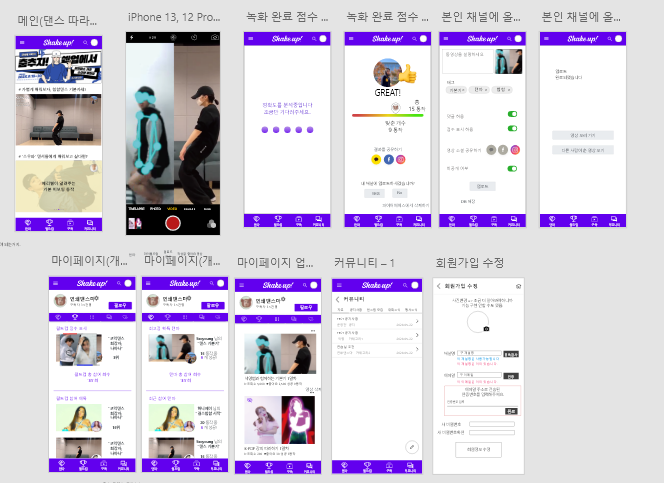
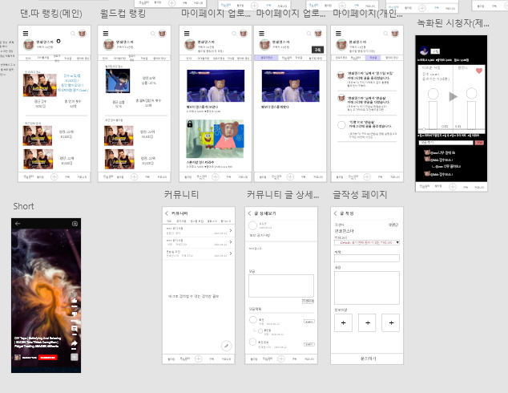

May Rhee
May Rhee
SELECTED WORK / DANCE LEARNING · COMPUTER VISION
Shake-Up
An online space to learn, practise and share dance with computer-vision-assisted feedback.
A closer look at the process and the work.

THE BIG PICTURE
A little about the project.
Shake-Up was built for dancers who wanted to practise from anywhere. The platform combines online choreography lessons, pose-based feedback, a dance competition and personal channels.
Read project README ↗01 / SHAKE-UP
Dance along
An online choreography experience: follow the movement, then see pose-detection feedback and a score.
02 / SHAKE-UP
Dance World Cup
Participants upload videos, vote on dance battles and follow competition results.
03 / SHAKE-UP
Channels and community
A personal channel organises uploaded videos, dance results and followed creators.
04 / SHAKE-UP
Planning and interface design
The README includes Adobe XD wireframes and the system architecture alongside the final experience.

